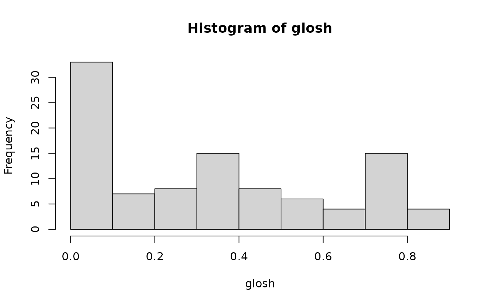
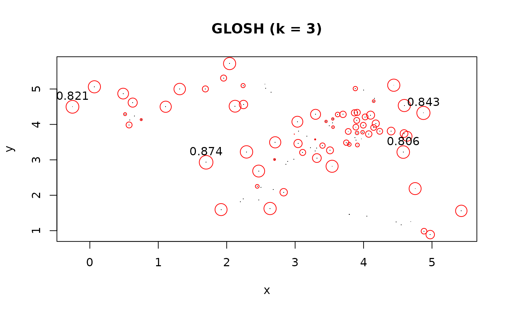
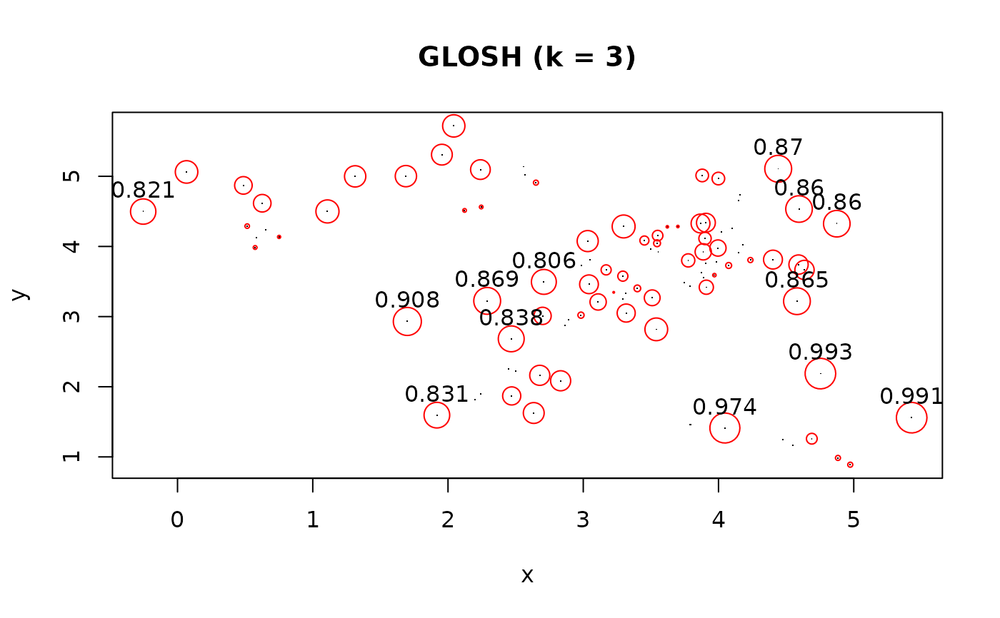
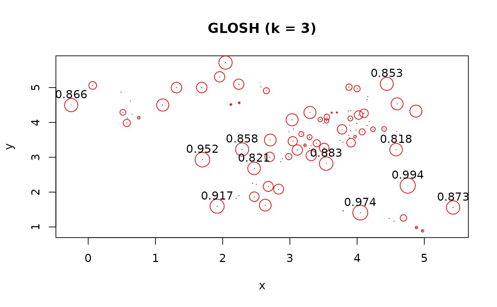
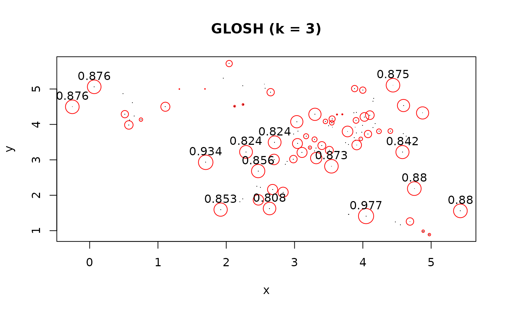

Calculate the Global-Local Outlier Score from Hierarchies (GLOSH) score for each data point using a kd-tree to speed up kNN search.
Value
A numeric vector of length equal to the size of the original data set containing GLOSH values for all data points.
Details
GLOSH compares the density of a point to densities of any points associated within current and child clusters (if any). Points that have a substantially lower density than the density mode (cluster) they most associate with are considered outliers. GLOSH is computed from a hierarchy a clusters.
Specifically, consider a point x and a density or distance threshold lambda. GLOSH is calculated by taking 1 minus the ratio of how long any of the child clusters of the cluster x belongs to "survives" changes in lambda to the highest lambda threshold of x, above which x becomes a noise point.
Scores close to 1 indicate outliers. For more details on the motivation for this calculation, see Campello et al (2015).
References
Campello, Ricardo JGB, Davoud Moulavi, Arthur Zimek, and Joerg Sander. Hierarchical density estimates for data clustering, visualization, and outlier detection. ACM Transactions on Knowledge Discovery from Data (TKDD) 10, no. 1 (2015). doi:10.1145/2733381
See also
Other Outlier Detection Functions:
kNNdist(),
lof(),
pointdensity()
Examples
set.seed(665544)
n <- 100
x <- cbind(
x=runif(10, 0, 5) + rnorm(n, sd = 0.4),
y=runif(10, 0, 5) + rnorm(n, sd = 0.4)
)
### calculate GLOSH score
glosh <- glosh(x, k = 3)
### distribution of outlier scores
summary(glosh)
#> Min. 1st Qu. Median Mean 3rd Qu. Max.
#> 0.0000 0.0000 0.3571 0.3324 0.5488 0.8744
hist(glosh, breaks = 10)

### simple function to plot point size is proportional to GLOSH score
plot_glosh <- function(x, glosh){
plot(x, pch = ".", main = "GLOSH (k = 3)")
points(x, cex = glosh*3, pch = 1, col = "red")
text(x[glosh > 0.80, ], labels = round(glosh, 3)[glosh > 0.80], pos = 3)
}
plot_glosh(x, glosh)

### GLOSH with any hierarchy
x_dist <- dist(x)
x_sl <- hclust(x_dist, method = "single")
x_upgma <- hclust(x_dist, method = "average")
x_ward <- hclust(x_dist, method = "ward.D2")
## Compare what different linkage criterion consider as outliers
glosh_sl <- glosh(x_sl, k = 3)
plot_glosh(x, glosh_sl)

glosh_upgma <- glosh(x_upgma, k = 3)
plot_glosh(x, glosh_upgma)

glosh_ward <- glosh(x_ward, k = 3)
plot_glosh(x, glosh_ward)

## GLOSH is automatically computed with HDBSCAN
all(hdbscan(x, minPts = 3)$outlier_scores == glosh(x, k = 3))
#> [1] TRUE